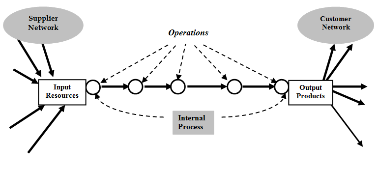

Process Management: Fundamentals

process management fundamentals
Almost every business is basically a system of interlaced processes that work together to produce a product or service. Each process is made up of staff, equipment, communication, and linkages that help ensure operations run smoothly. Process management is simply understanding and documenting both real and ideal processes inside your organization, and understanding and addressing differences between the two. Or, as Michael Hammer of Massachusetts Institute of Technology puts it:
Process management is a structured approach to performance improvement that centers on the disciplined design and careful execution of a company’s end-to-end business processes. Formally, a business process is an organized group of related activities that work together to create a result of value to customers (for example, order fulfillment, product development and post-sales support). The two most important words here are organized and together. All activities in a business process must work together; they must be aligned for the common purpose of serving customer needs. People must operate as a team instead of focusing narrowly on individual tasks and protecting turf. All activities in a business process also should be guided by a design that specifies which activities are to be done when and by whom. A process design ensures repeatability and consistency. (2002)
First steps toward process management
Hammer identified six steps to start process management in an organization:
- Identify company processes, typically five to ten.
- Make people throughout the company aware of the processes and how their own work fits in.
- Create and deploy measures of end-to-end process performance, derived from customer and shareholder needs. Assess current process performance and set targets.
- Designate process owners: senior managers with end-to-end authority for a process, responsible for ensuring consistently high performance. The process owner establishes the process design, ensures that the design is followed, obtains resources that the process requires and intervenes as needed to improve the process.
- Select two or three processes for redesign and improvement. Implement those new designs in a staggered fashion.
- Over time, align the company’s management systems with the new prominence of its processes. (2002)
While we will be addressing it in the Six Sigma segment of this book, one can also think of process management as consisting of five basic steps: define, measure, analyze, improve, and control. This is commonly simply referred to as DMAIC. there are other versions of process management life cycles, but DMAIC is perhaps the most well known. Some other process management life cycle examples include:
- Process discovery, process analysis, process redesign, process implementation, and proces monitoring and controlling. (Dumas, 2018)
- Plan, design, implement, execute, evaluate, analyze, recommend. (Lodhi, Koppen, & Saake, 2011)
As you can see, in all three cases there are similarities. First, the process in place must be understood, then informed efforts must be made to improve the process, followed by assessment and measurement of if the process truly did improve based on the changes made.
Suppliers, Inputs, Process, Outputs, and Customers (SIPOC) Diagrams
Suppliers, Inputs, Process, Outputs, and Customers (SIPOC) diagrams identify all relevant elements of a process. They are used to help define the scope and to set the boundaries of a process improvement process. They help us answer these questions:
- Who provides input to the process?
- What goes into the process?
- How are the inputs transformed to outputs?
- What comes out of the process?
- Who receives the outputs of the process?

Business process management defined
Business process management has much more to do with what is put into practice then it does with what theory has to say. A basic goal of business process management is to measure the processes in place, analyze those measurements, and make changes as applicable. Common measurements include task time, lag time, and process costs.
Often, process optimization can not only save time and money, but may also improve employee satisfaction and safety. Process optimization can also work well to incrementally improve performance towards company goals and objectives. The truth is though that in many cases business process Improvement is implemented in an effort to save money. This may occur though optimized processes such as those that can be found when there is better process understanding, when parallel processes are consolidated, or when processes are built to be more effective or efficient.
In some cases there are so many changes to the process that it becomes a process transformation instead of simply a process optimization. In cases of process transformation, it may be best to consider the work as a project in and of itself.
PROCESS MANAGEMENT Life cycle (design/discover, model, execute, analyze, measure/monitor, optimize)
There are a plethora of different life cycle models that exist for business process management. However, there are also some common themes. In almost all cases they include the following concepts or phases: design/discover, model, execute, analyze/measure/monitor, and optimize. Life cycle models are intended to explain business process management from start to finish.
Design/discover - In this phase you work to identify which business processes are the most critical to improve as well as to identify all persons believed to be involved in the process. During this phase you also discuss how large a project scope you feel this processiImprovement may entail. Improving a process, after all, is a project in itself.
Model - In this phase the team works to visualize the workflow sequence and break it down into identifiable and agreed upon tasks or work units. All persons identified in the design and discover phase should be asked for input in the creation of the workflow sequence so that items are not missed or misrepresented. The goal is to identify what currently the exists and then to identify what should I ideally exist. The work is remedying the gap in between.
Execute - Once a more ideal process flow has been identified in the modeling stage, it is time to put it in place. The team should address all areas that may be impacted by the process change, develop a strong communication plan, offer a means for individuals to express concerns and ensure those concerns are addressed, modify the plan based on any identified bottlenecks or stumbling blocks, set an agreed-upon timeline for implementation, and then implement the plan following what was communicated both time and scope wise.
Analyze/measure/monitor - When's the new process has been executed it is important to ensure it is being monitored and analyzed. This way the team can assess if it is functioning as intended and if it has the benefits and outcomes that were intended. Information should be shared freely with the team and not held hostage by only a few top executives. Understanding how the new process is performing, whether as expected or not, is important for all persons in the process to understand. Is things with as intended then this information will demonstrate the improvements, if not, this information will help the whole process team understand more about the process itself and potentially identify assumptions made or process steps overlooked.
Optimize - Once a new process Is in place and functioning as intended, the process should be reviewed once again by the team to see if there are any further refinements that might be made to optimize it even further. Optimization should be minor tweaks, not revisitation of the full process. if revisitation had been necessary for the full process that should have occurred in the analyze /measure /monitor phase. Any optimization efforts should also be tracked and measured.
Process architecture
Business process architecture is understanding the overall set of business processes and their interrelationships in a structural sense. Each process will have input, outputs, and energy consumed. Each process will be part of a system of processes. These processes are very likely to have interrelationships, dependencies, and resource overlaps.
Process execution and deployment
Companies may have a full sense of comfort in feeling that all processes within their jurisdiction are running smoothly and swiftly if not flawlessly. They may also feel that all processes are adequately tracked. However, it is quite often that neither are the case. Instead, many processes may be repeatable but they are undocumented. In other cases, processes are not necessarily even entirely repeatable and may instead shift and move with every iteration. even in the case of a process being defined and documented, it may remain unmeasured. This means there is likely room for improvement. Consider these statistics from 236 Polish companies in 2016 (Mulholland, 2017):
- 69% had documented, repeatable processes but only 4% measured and managed them
- 37% had processes that are repeatable, defined, and documented, but unmeasured
- 25% had processes that are repeatable but not documented
- 28% had processes that are defined, measured, but unmanaged
- 6% had processes that are accidental
- 4% had processes that are measured and managed
Having a process isn't enough, particularly if that process is not consistent nor well understood. Instead, processes should be clear to all, as effective and efficient as possible, well documented, and assess regularly using reliable measurements. It is important to note that there are times when top or middle management will feel that processes are being handled well, yet those insubordinate roles may not feel the same. From the same Polish company study mentioned above, when lower-level management in ordinary employees were asked if processes are measured and managed, only 4% said yes while when at the same location top and middle-level management were asked the same question that number leapt to 29%. Similar differences surface when the two groups were asked if processes are defined and measured but unmanaged. In this case, 41% of lower-level management in ordinary employees said yes, whale a whopping 70% of top and middle-level management said yes (Mulholland, 2017).
Deployment process
Process deployment ensures that any necessary piloting has occurred and there is successful solution installation in the production environment. It also ensures there is a hand-off to any applicable operations and maintenance support teams. During this phase, any process improvements move from a development and testing environment to the actual production environment. It may be referred to as the installation, rollout, or go live stage. Some steps that may occur, based on the process being deployed, is data conversion, pilot testing, training, and solidification of any necessary operating and maintenance. it is recommended that the solution be deployed in a pilot environment to ensure it will perform all of its functions to meet full-scale operational requirements before being placed into full production. The pilot phase also ensures that the solution is understandable and acceptable to the users.
Human factors
Human factors play a role in the deployment of new processes. The overall objective to make a solution operational and available to the business community and other stakeholders. This means that management must work with all members of the process team. They should ensure that reflection has occurred regarding modifications to previously defined tasks or processes, there is clear understanding of how to incorporate new tasks or processes for current and future phases, and that adjustment of any resource and allocation requirements has occurred. This necessitates management fully understanding which individuals are involved in each process step and having an open dialogue with them. It also means the team may need to pause if questions or concerns are brought up until they can be adequately answered. For this to occur, there has to be trust between the individuals involved.
At the end of deployment, operations and maintenance support personnel will be charged with managing the process from that point forward. They must understand the changes, be in agreement with the changes, and understand when and to what degree their roles, responsiblities, or duties may change. A deployment is only successful if it continues to function on a longer-term basis. Due to this, management and the process team must ensure that the appropriate individuals are given the time, tools, and resources necessary for the process improvements to succeed over time. It is also important to ensure that those individuals have bought into and support the process change.
BUSINESS PROCESS MANAGEMENT SOFTWARE
Business Process Management (BPM) software helps business managers ensure all of their systems and processes are working optimally. They can be used for tracking information, modeling, optimizing, automating, executing, controlling, and measuring business processes. Business process modeling provides a graphical representation of business processes, often in a flowchart format. BPM software helps all team members better understand and monitor workflow across a company. In some cases it also permits various simulations to help determine optimal improvements. Many systems also offer user-defined dashboards to monitor improvements in real time and give performance information to team members in an easy-to-understand format. This helps ensure all team members are working with common information.
The options for business process management software are many. Some examples include Visio, Lucidchart, Adobe LiveCycle, Oracle Business Process Management, OpenEdge, Metastorm, NetWeaver, Zoho, IBM Business Process Manager, Workfront, Bizflow, Visual Planning, ProcessMaker, and many more. There are also multiple open source and free business process management tools. Some of these include Modelio, jBPM, Jsonic BPM, Yworks Yed, Camuda (free version and paid versions), Activiti, Bonitasoft BPM, Aris Express, and more.
Process automation software and robotic tools
Business Process Management (BPM) software products are often intended to make it easier for business administrators and others in the organization to automate certain processes as well as to track data. This works particularly well for processes that are structured and repeatable as compared to those that are unstructured and variable. Systems such as this provide a platform for modeling and executing process based applications and business rules.
Robotic Process Automation
Robotic process automation is technology that manages systems capable of emulating human actions via interaction with digital equipment and software. These types of systems work best for repetitive, mundane, or high-risk tasks that have logic-based outcomes. These systems may or may not have robots that look a bit humanoid. What matters is less how much the tools look like humans and more how much the tools can satisfy automation needs. The robot (also known as a bot) in robotic process automation is more akin to software robots running on a physical or a virtual machine (Casey, 2020). They can be used in many areas, such as finance, accounting, production, and customer services to name a few.
Landreman, shares four basic check-offs when determining possible RPA fits:
- The process must be rule-based.
- The process must be repeated at regular intervals, or have a pre-defined trigger.
- The process must have defined inputs and outputs.
- The task should have sufficient volume (Casey, 2020).
Machine Learning
In many cases, robotic process automation makes use of machine learning. Machine learning Involves analyzing large quantities of information to improve a computer's ability to make decisions and predictions. It falls within the larger family of artificial intelligence (AI) and computer science. It focuses on the use of data and algorithms to imitate the way humans learn, they're by gradually improving its accuracy.
Process analysis and performance management
Whether a company is using process automation tools, business process management software, or are largely dependent on human factors, process analysis and performance management should be a key part of the overall process management plan. This necessitates having plans in place for overall governance and control of processes, means to measure process performance, and means to analyze those measurements and make modifications as appropriate. It is important to note that different processes are quite likely to have different governance and control mechanisms as well as different methods for measurement and analysis.
Governance and control
Process governance defines how a company functions manageraly to ensure each process and project is executed properly and in accordance with what is expected by management and clients. A key aspect of governance and control is having clearly defined and communicated roles, administrative structure, and decision-making authority.
Some roles that may be found inside business government structures include an executive steering committee, executive sponsors, process/project directors, process/project managers, change control boards, and team leads. In cases where there is an executive steering committee, they are most often the ultimate decision making body. This same body also ensures resources are made available to implement decisions made. Oftentimes, decisions are made via some form of formal voting with clearly identified voting membership and composition. In many cases, voting and decisions only occur when there is a quorum of members available and participating. A quorum is defined as 50% of the membership plus one. Two types of voting that are often used are majority vote or a consensus model. With a majority vote a simple majority must vote in favor or against a recommended action. With a consensus model, all members must affirmatively agree.
Level of authority
The levels of authority within a team and organization should be clear to all individuals .This should include any transfers of authority if an individual is not available for some duration of time. It is strongly advised that companies define processes for any issue escalation and resolution. In some cases, it is also relevant to have some form of an appeal process.
It may be beneficial to create formal governance plan documents that address how decisions are made, defines roles and responsibilities, and addresses the time frame in which decisions should be made. It should also include any potential decision appeal pathways as well as an agreed-upon escalation and appeal process that will be used. All team members and stakeholders should be familiar with the governance process and their role in it as is described in this plan.
Analyze
A part of analysis should include discussing assumptions that are made at the start of a process modification as well as at the end of a process modification. Well all business decision-making includes at some level of assumption, in many cases process failures often include assumptions that were made that were not entirely accurate. Therefore, it is best to discuss what they are and why they are relevant.
Before any new process is mandated company-wide, the new practices and rules should be tested by various team members and across all impacted departments first. This testing can identify potential complications that might arise. In some cases, complications can be as simple as a team member needing help understanding and implementing a new rule within their daily work schedule. In other cases, a complication could entail a gap in the analysis of the process is over row that must be addressed.
As new process improvements are put in place, documentation of successes and shortcomings should occur. Equally, a review of lessons learned from prior similar improvements should occur so that mistakes are not repeated. Thorough documentation and review can help strengthen governance strategies and outcomes, assuming it reaches the right intended audience. It is recommended that if a document is modified over time, a change log is retained that explains what what changed and why.
Measure
For thorough analysis to occur, there needs to be measurements of processes and practices in place. There must be a assurance and confidence that the measurements are accurate and include all necessary information. The results of measurement only have a purpose when they are used for understanding, analysis, and decision-making. Measurement in and of itself does not accomplish much if the information is not put to active use by individuals who are involved in the processes themselves.
Documentation is equally important for measurement. Like measurement, documentation only works if the appropriate individuals review it when needed. When possible, documents should be referenced in conversations and communications so that all individuals involved have a common understanding of what has occurred historically and currently. Documentation removes ambiguity and speculation.
Measurement results and applicable documentation should be shared with applicable team members. Communication helps ensure individuals don't unintentionally break away from the intended standard practices and demonstrates the impacts of process improvements that have been put in place over time. Err on the side of over communication instead of under communication. Additionally, Allow for feedback. Different team members and departments may be impacted by changes in practices, processes, or rules differently. Allowing for feedback ensures all impacted individuals have some voice in governance, recommendations, and ultimately decision-making.
Improve and Optimize
Process improvement is the business practice of identifying, analyzing, and improving existing business processes to optimize performance or improve quality. The idea is to minimize errors, reduce waste, improve productivity, and streamline efficiency. After analyzing the processes you want to improve, you then decide specifically what improvements you wish to make, and then you work to make them in the most logical, effective, and efficient ways possible.
OPTIMIZE
Process optimization is the continuous application of principles of process improvement. Often these improvements are made in iterative steps. The idea is to simplify or eliminate any activities or elements of a process that does not positively impact the outcome. A focus is put on identifying and verifying what adds value and improving on that.
Key Performance Indicators (KPI)
Key Performance Indicators (KPIs) help determine what is of most importance for a company to focus on. KPIs are a set of metrics (numerical values) used to measure performance over time and help gauge if a company is meeting its strategic goals and objectives. KPIs are often created by combining one or more relevant metrics into a mathematical relationship that expresses the performance, condition, or efficiency of a part, system, facility, or organization. As an example, a KPI might be the percentage of work orders requiring rework over a specific period of time. In most instances, KPIs are time sensitive; this means that acting on information in a timely manner is important. That said, KPIs are not static measures used for periodic comparisons, but instead should be continually measured and reviewed for relevance. As an example, KPI results may be discussed in weekly or monthly process management reporting meetings.
BUSINESS PROCESS RE-ENGINEERING
Sometimes business process management is referred to as business process re-engineering. However, re-engineering has a fairly specific meaning. The terminology was introduced by Michael Hammer and James Champy in the early 1990s. Business process re-engineering entails the fundamental redesign of business processes to achieve major improvements over a short period of time. Often the improvement goals are larger than those of incremental Improvement strategies and involve changing an organization's major functions. Like other business process improvement, the goal is to increase efficiency, improve product quality, and/or decrease costs. The distinction is that it often makes fundamental changes to the entire scope of a business system. After inefficient processes are identified and agreed upon, key performance indicators are defined and then a re-engineering process is put in place.
References
Casey, K. (2020). How to explain Robotic Process Automation (RPA) in plain English. The Enterprisers Project. Retrieved June 19, 2022 from https://enterprisersproject.com/article/2019/5/rpa-robotic-process-automation-how-explain
Dumas, M., M. La Rosa, J. Mendling and H. A. Reijers. (2018). Fundamentals of Business Process Management (2nd Ed.). Heidelberg: Springer
Lodhi, A., Koppen, V. and Saake, G. (2011) Business Process Modeling: Active Research Areas and Challenges. https://www.researchgate.net/publication/236109355_Business_Process_Modeling_Active_Research_Areas_and_Challenges
Mulholland, B. (2017). 17 BPM statistics to help you increase efficiency in your business. Process.st. Retrieved May 1, 2022 from https://www.process.st/bpm-statistics-increase-efficiency/